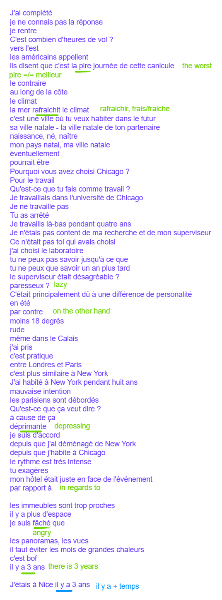
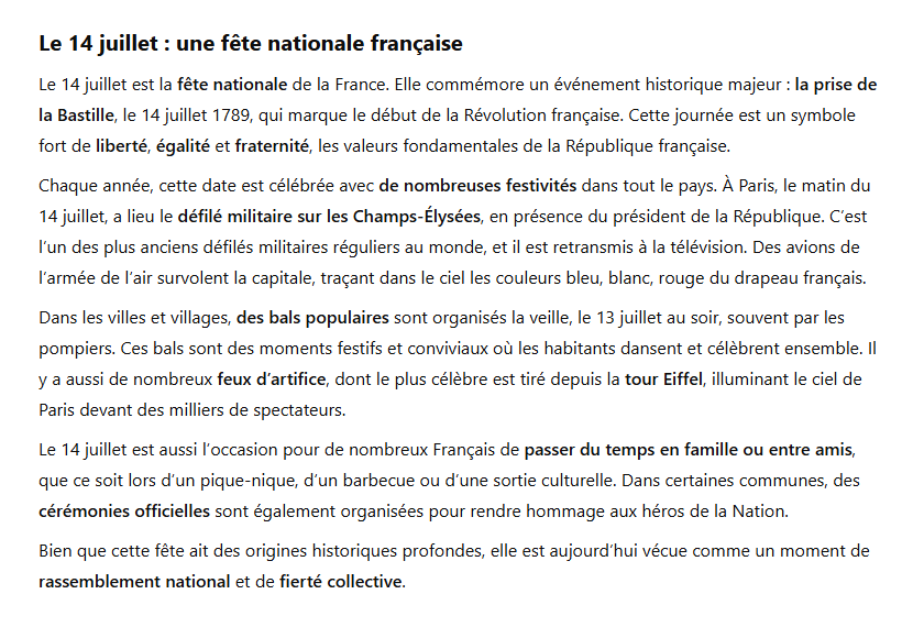

Lesson 2
1 Dialogue
J’ai complété
Je ne connais pas la réponse
Je rentre
C’est combien d’heures de vol?
Vers l’est
Les américains appellent
Ils disent que c’est la pire1 journée de cette canicule
Le contraire
Au long de la côte
Le climat
La mer rafraichit le climat
1 pire <> meilleur
2 Naissance, né, naître
3 could/might/may, conditionnel present of pouvoir
4 pendant is used for completed actions, for ongoing actions use depuis.
C’est une ville où tu veux habiter dans le futur
Sa ville natale2 - la ville natale de ton partenaire
Mon pays natal, ma ville natale
Éventuellement
Pourrait3 être
Pourquoi vous avez choisi Chicago?
Pour le travail
Qu’est-ce que tu fais comme travail?
Je travaillais dans …
Tu as arrêté
Je ai travaillé là-bas pendant4 quatre ans
Je n’etais pas content de ma recherche et de mon superviseur
Ce n’était pas toi qui avais choisi
J’ai choisi le laboratoire
Tu ne peux pas savoir jusqu’à ce que
Paresseux?
C’était principalement dû à une différence de personalité
En été
Par contre5
Moins 18 degrés
Rude6
même7 dans le Calais
J’ai pris
C’est pratique
Entre Londres et Paris
C’est plus similaire à New York
J’ai habité à New York pendant huit ans
Mauvaise intention
Les parisiens sont débordés (ovewhelmed, overworked, swamped)
Je suis d’accord
Depuis que j’ai déménagé (moved) de New York
Depuis que j’habite à Chicago
Le rythme est très intense
Tu exagères (exaggerate)
Mon hôtel était juste en face de l’événement
Par rapport à (in regards to)
5 on the other hand, au contraire = on the contrary
6 rough
7 even
8 il y a x ans = x years ago, used for past events
Les immeubles sont trop proches (close)
Il y a plus d’espace
Je suis fâché (angry) que
Les panoramas, les vues
Il faut éviter les mois de grandes chaleurs
C’est bof
Il y a 3 ans
J’etais à Nice il y a 3 ans8
1.1 Reading Exercise
Le 14 juillet: une fête nationale française
Le 14 juillet est la fête nationale de la France. Elle commémore un événement historique majeur: la prise de la Bastille, le 14 juillet 1789, qui marque le début de la Révolution française. Cette journée est un symbole fort de liberté, égalité, et fraternité, les valeurs fondamentales de la République française.
Chaque année, cette date est célébrée avec de nombreuses festivités dans tout le pays. À Paris, le matin du 14 juillet, a lieu le défilé militaire sur les Champs-Élysées, en présence du président de la République. C’est l’un des plus anciens défilés militaires réguliers au monde, et il est retransmis à la télévision. Des avions de l’armée de l’air survolent la capitale, traçant9 dans le ciel les couleurs bleu, blanc, rouge du drapeau français.
9 what is traçant? tracer?
10 why le 13 juillet “au soir”, why not just le 13 juillet soir or soir de …?
11 sentence structure of dont…?
Dans les villes et villages, des bals populaires sont organisé la veille, le 13 juillet au soir10, souvent par les pompiers. Ces bals sont des moments festifs et conviviaux où les habitants dansent et célèbrent ensemble. Il y a aussi de nombreux feux d’artifice, dont le plus célèbre est tiré depuis la Tour Eiffel, illuminant le ciel de Paris devant des milliers de spectateurs11.
Le 14 juillet est aussi l’occasion pour de nombreux Francais de Passer du temps en famille ou entre amis, que ce soit12 lors13 d’un pique-nique, d’un barbecue ou d’une sortie culturelle. Dans certaines communes, des cérémonies officielles sont également organisées pour rendre hommage aux héros de la Nation.
12 subjunctive. que to introduce a subjunctive clause, soit is the present subjunctive of être. Tother “que ce soit” means whether it be
13 lors de together works as a preposition phrase meaning “during” or “at the time of”
14 bien que = although, starts subjunctive clause
Bien que14 cette fête ait des origines historiques profondes, elle est aujourd’hui vécue comme un moment de rassemblement national et de fierté collective.
1.2 Devoirs
Fais l’exercice 1 p179 + ex 1 p184

